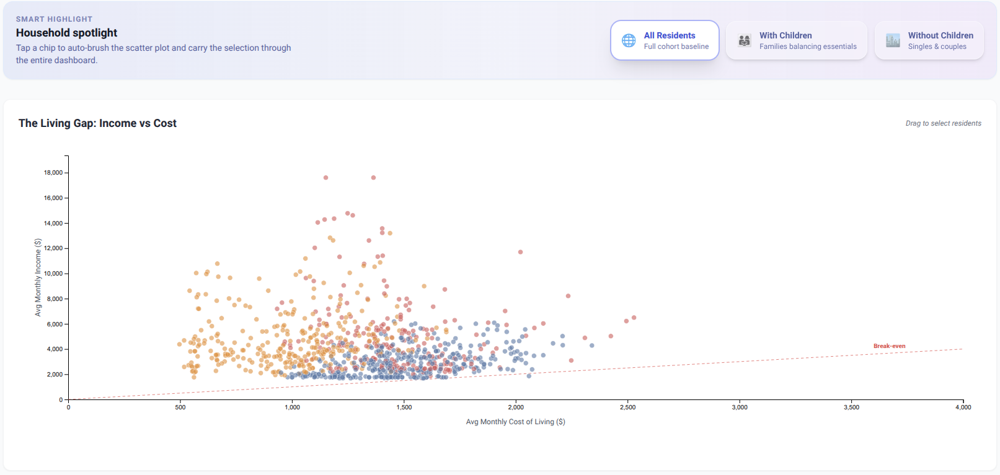
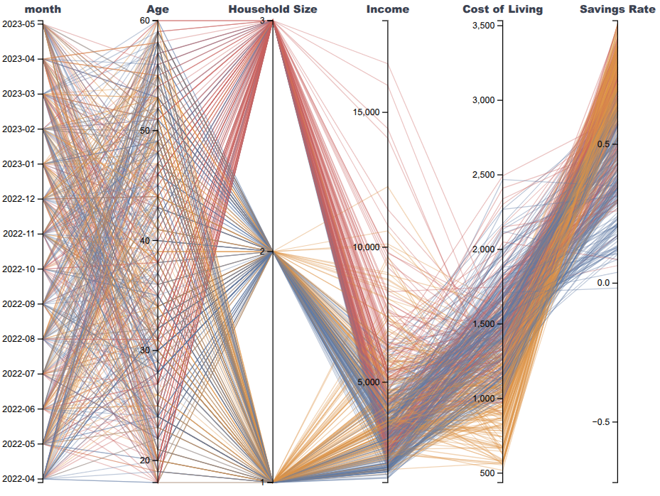
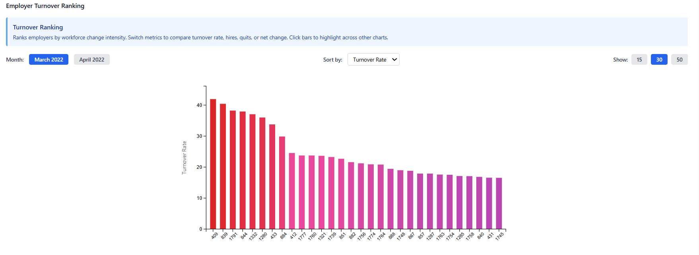
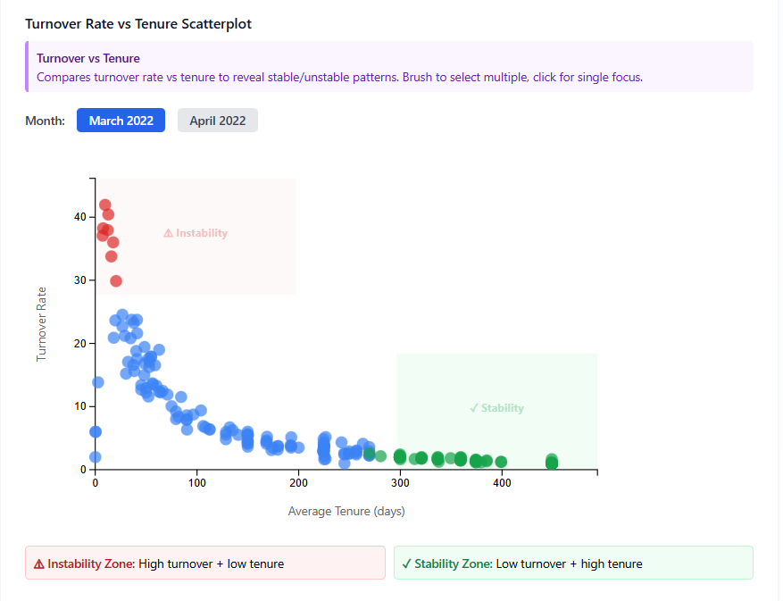
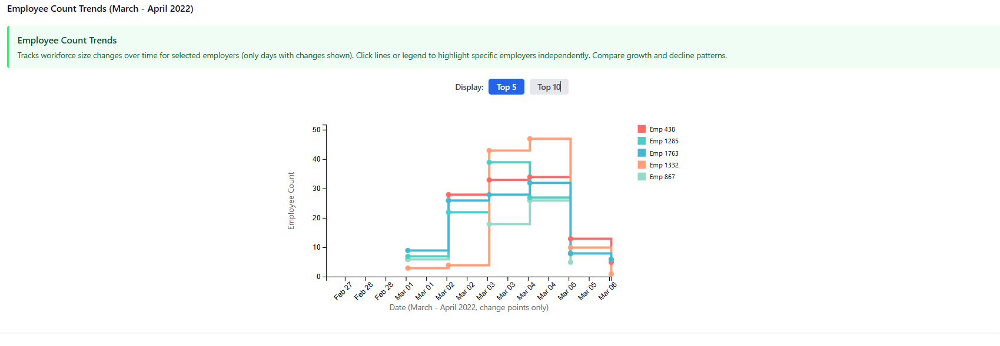

Figure 1 (left): Geographic financial health at the start of the period. Figure 2 (right): Geographic financial health later in the dataset.
Michal Sterzel, University of Luxembourg & UPC Universitat Politècnica de Catalunya, michal.sterzel.001@student.uni.lu
Thomas Gantz, University of Luxembourg & Sorbonne Université, thomas.gantz.001@student.uni.lu
Jan Marxen, University of Luxembourg & Sorbonne Université, jan.esquivel.001@student.uni.lu
Student Team: YES
Backend: Python 3.11, Flask, Pandas, NumPy, Scikit-learn (K-Means clustering), Pytest
Frontend: React 18, D3.js v7, Axios, TailwindCSS
Infrastructure: Docker, Docker Compose, Nginx
Approximately how many hours were spent working on this submission in total?
Approximately 45 hours (≈15 hours per team member)
Video
Use visual analytics to analyze the available data and develop responses to the questions to be provided. In addition, prepare a video that shows how you used visual analytics to solve this challenge.
Questions
1 - Over the period covered by the dataset, which businesses appear to be more prosperous? Which appear to be struggling? Describe your rationale for your answers. Limit your response to 10 images and 500 words.
Provide your answer and corresponding images here.
2 - How does the financial health of the residents change over the period covered by the dataset? How do wages compare to the overall cost of living in Engagement? Are there groups that appear to exhibit similar patterns? Describe your rationale for your answers. Limit your response to 10 images and 500 words.
Answer:
We analyzed resident financial health through three lenses: geographic distribution, demographic disparities, and expense trajectories.
Geographic Financial Health. A building-level heatmap reveals scattered "red pockets" of low savings across Engagement. Comparing snapshots (Figures 1 & 2) shows these zones are persistent rather than expanding, indicating chronic financial stress in specific neighborhoods rather than a city-wide decline.
Figure 1 (left): Geographic financial health at the start of the period. Figure 2 (right): Geographic financial health later in the dataset.
Wages vs. Cost of Living. The "Living Gap" scatter plot (Figure 3) shows most residents save money, but a visible band hugs the break-even line. Filtering reveals that families with children sit closer to the break-even threshold than singles or couples without children, despite often having similar incomes (Figures 4 & 5).

Figure 3: All residents.

Figure 4: Families with children.

Figure 5: Households without children.
Cluster Patterns. K-Means clustering identifies three profiles (Figure 6): Affluent Achievers (high income, high savings), Stretched Households (low income, low savings), and Lean Savers (average income, low costs). We also found that education level is highly correlated with savings rates (Figure 7), with graduates saving significantly more than those with lower education.

Figure 6 (left): Parallel coordinates showing cluster profiles. Figure 7 (right): Savings rates by education and household size.
Expense Trajectories & Inequality. A stacked area chart (Figure 8) tracks average monthly income (dashed line) against cumulative expenses. While income and expenses follow a cyclical pattern, a significant drop in both salary and expenses is visible in the final months (April–May 2023), suggesting a potential economic downturn. To measure disparity, we compute the Gini coefficient (Figure 10). Income inequality remains stable, whereas savings inequality fluctuates strongly (0.1–0.22). This indicates that inequality shifts are driven by expenditure behavior rather than salary differences, which remain constant relative to each other.


Figure 8 (left): Income vs. stacked expenses over time. Figure 9 (right): City-wide expense breakdown.

Figure 10: Gini coefficient for income (blue) and savings rate (red) over time. The formula G = (2 * sum(i * yi)) / (n * sum(yi)) - (n+1)/n measures inequality from 0 (equal) to 1 (unequal).
Conclusion. Financial health in Engagement is stable on aggregate but uneven. The strongest predictor of financial strain is household structure: families with children face higher fixed costs. Standards of living appear stagnant, with a concerning dip in economic activity at the end of the period. Geographic hotspots of low savings persist over time, suggesting targeted interventions could have outsized impact on the most vulnerable residents.
Visual Analytics Process. We started with a simple Wage vs. Cost of Living scatterplot to separate residents running a surplus from those in deficit. To explain the patterns we saw, we used bidirectional brushing to link this view with a Parallel Coordinates Plot, allowing us to select outliers and immediately inspect their demographics. We also applied K-Means clustering to define resident personas, which helped us analyze how specific household types evolved over time. For categorical variables, dynamic bar charts showing savings rates were essential for spotting correlations. We could have added those variables to the parallel plot, but this would have cluttered the view. We also added a "With Children" toggle, which instantly highlighted the cost-of-living penalty for families. To quantify inequality, we calculated the Gini index, giving us a concrete metric for financial disparity. All these views are synchronized via a global time control bar, enabling us to scrub through the timeline and observe temporal shifts. Finally, we excluded the first month of data due to anomalous "rent adjustments" that skewed the trends without adding analytical value.
3 - Describe the health of the various employers within the city limits. What employment patterns do you observe? Do you notice any areas of particularly high or low turnover? Limit your response to 10 images and 500 words.
Answer:
We evaluated employer health in Engagement by analyzing workforce stability, turnover intensity, job-to-job mobility, and short-term workforce size changes. Our analysis focuses on March–April 2022, the only period in the dataset where job transitions were observed.
Identifying Employers with Extreme Workforce Instability. The Employer Turnover Ranking highlights pronounced differences in workforce change intensity among employers. Rather than representing the full employer population, the visualization focuses on the upper end of the distribution, revealing a subset of employers with exceptionally high turnover values. In several cases, turnover exceeds 100%, reflecting intensive workforce churn amplified by small average headcounts, where repeated employee exits strongly impact the turnover metric.

Figure 1: Employer Turnover Ranking highlighting employers with the most intense workforce change activity.
Employers ranking highest by turnover also tend to exhibit elevated quit counts and strongly negative net workforce change, indicating persistent outward movement rather than balanced hiring activity. This pattern suggests localized workforce instability during the observed period, characterized by repeated employee departures rather than short-term hiring spikes. Across the broader dataset, employers with lower turnover and minimal net workforce change display more stable employment behavior. While not all such employers are visible in the ranking view, their limited outward workforce movement and relatively consistent employee counts indicate comparatively stable organizational structures during the analyzed timeframe.
Turnover vs. Tenure Patterns. The Turnover Rate vs. Average Tenure scatterplot highlights a clear inverse relationship between tenure and turnover. Employers cluster into two dominant regimes: high turnover and low tenure employers form an instability zone, characterized by short job durations and frequent exits; low turnover and high tenure employers form a stability zone, where workers remain employed for longer periods with minimal churn. This separation suggests that workforce turnover is not evenly distributed across employers but instead concentrated among a specific subset of organizations.

Figure 2: Turnover Rate vs. Average Tenure, showing the inverse relationship between tenure stability and churn intensity.
Employer Stability Overview. To integrate multiple indicators, we constructed an Employer Stability Overview bubble chart, encoding turnover, tenure, and workforce size simultaneously. This visualization reinforces the contrast between high-risk employers (high turnover, low tenure) and stable employers (low turnover, high tenure). Employers of varying sizes appear in both categories, indicating that workforce size alone does not determine stability. However, high-risk employers with larger headcounts combine scale with elevated churn, increasing their potential impact on overall labor market dynamics.

Figure 3: Employer Stability Overview bubble chart: bubble size represents headcount, position encodes turnover and tenure, color indicates stability category.
Worker Mobility Between Employers. The Job Flow Sankey diagram reveals strong asymmetries in worker movement between employers. A limited number of employers act primarily as sources of outgoing labor, while others function mainly as recipients. These directional flows illustrate how worker mobility links employers into a connected network, with instability at certain organizations contributing disproportionately to overall job transitions.

Figure 4: Job Flow Sankey diagram showing worker transitions between employers, revealing which organizations are sources vs. destinations of labor.
Short-Term Workforce Growth and Decline. The Employee Count Trends step-line chart shows that workforce size changes occur in short, concentrated bursts within the limited period where changes were recorded. Several employers experience abrupt increases followed by rapid contractions over a small number of days. Although the observed time window is short, these sharp fluctuations align with employers identified as high turnover, reinforcing the association between churn and short-term workforce volatility.

Figure 5: Employee Count Trends step-line chart showing workforce size changes over time, highlighting employers with rapid hiring and departure cycles.
Conclusion. Overall, employer health in Engagement is highly uneven. A minority of employers exhibit pronounced instability, characterized by high turnover, low tenure, and strong outward workforce movement. In contrast, a larger group maintains relatively stable, long-term employment relationships. The concentration of turnover among specific employers suggests targeted labor market stress rather than systemic instability across the city. This pattern aligns with the resident financial stress observed in Question 2: households experiencing job instability are likely concentrated among the employees of these high-turnover employers.
Visual Analytics Process. We began with the Employer Turnover Ranking to identify which employers exhibited the most intense workforce churn. To understand the mechanisms behind turnover, we plotted Turnover Rate vs. Average Tenure, revealing that instability is driven by both high exit rates and short job durations. The Employer Stability Overview integrated tenure, turnover, and headcount into a single view, allowing us to distinguish stable organizations from those at risk. The Job Flow Sankey diagram provided crucial insights into labor market connectivity: by visualizing directional worker flows, we identified which employers disproportionately contribute to overall job transitions. Finally, the Employee Count Trends chart captured short-term volatility, showing that workforce instability manifests as sharp, concentrated hiring and departure cycles. Together, these linked views enabled us to pinpoint the subset of employers responsible for most of the labor market churn and assess their potential impact on resident financial stability.